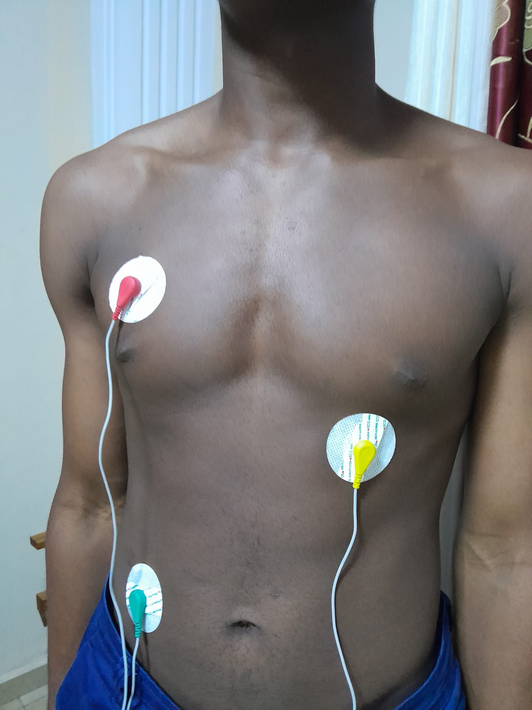
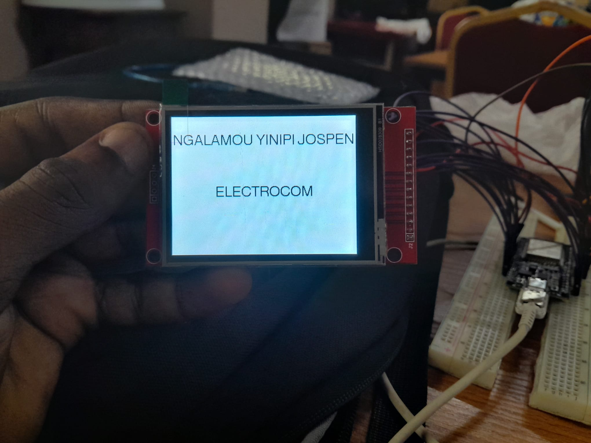
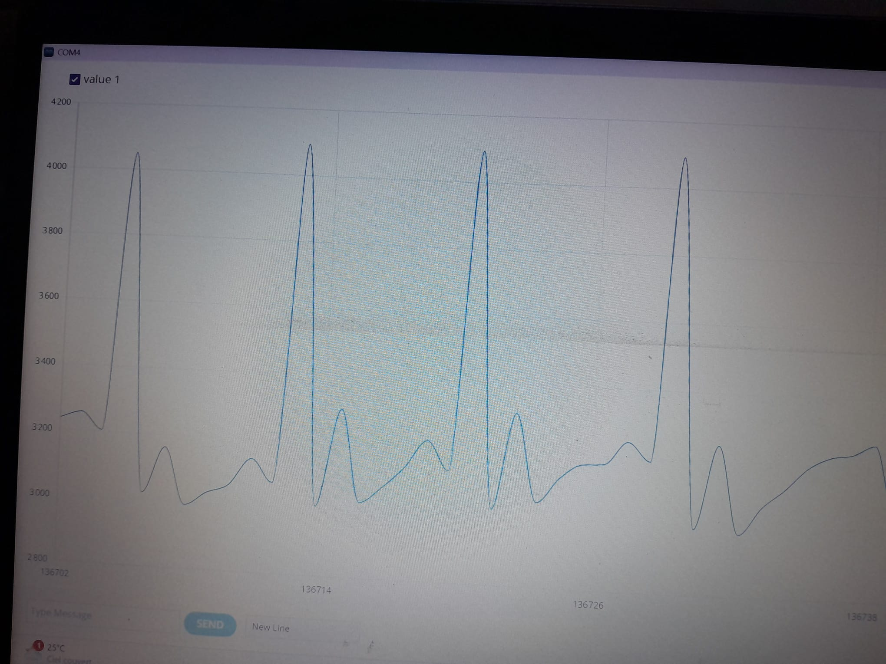

Contexte & objectif
Ce projet visait à concevoir un moniteur cardiaque portable capable d'extraire un signal bioélectrique de l'ordre du millivolt dans un environnement bruité, tout en garantissant une immunité électromagnétique et un affichage clair des battements en temps réel.
Démarche technique
- Conditionnement analogique : Amplification d'instrumentation différentielle à haut taux de réjection du mode commun (TRMC / CMRR).
- Filtrage actif : Étage passe-bande et filtre réjecteur de bande (notch 50 Hz) pour éliminer les artéfacts musculaires et les perturbations du réseau électrique.
- Numérisation & Affichage : Échantillonnage via microcontrôleur, gestion de l'affichage graphique sur écran TFT SPI et transmission série temps réel.
Captation & Environnement de test
V_OUT = 1.2 V
FREQ = 1.1 Hz
[ ECG PATTERN DETECTED ]



Haut : Simulation oscilloscope et pose différentielle des trois électrodes de dérivation.
Bas : Démarrage de l'interface TFT portable et restitution du complexe QRS sur traceur série.
Démonstrations Vidéo
Vidéo 1 : Séquence d'initialisation matérielle avec écran TFT autonome affichant la barre de progression puis la grille ECG.
Vidéo 2 : Défilement continu du tracé électrocardiographique filtré en conditions réelles.